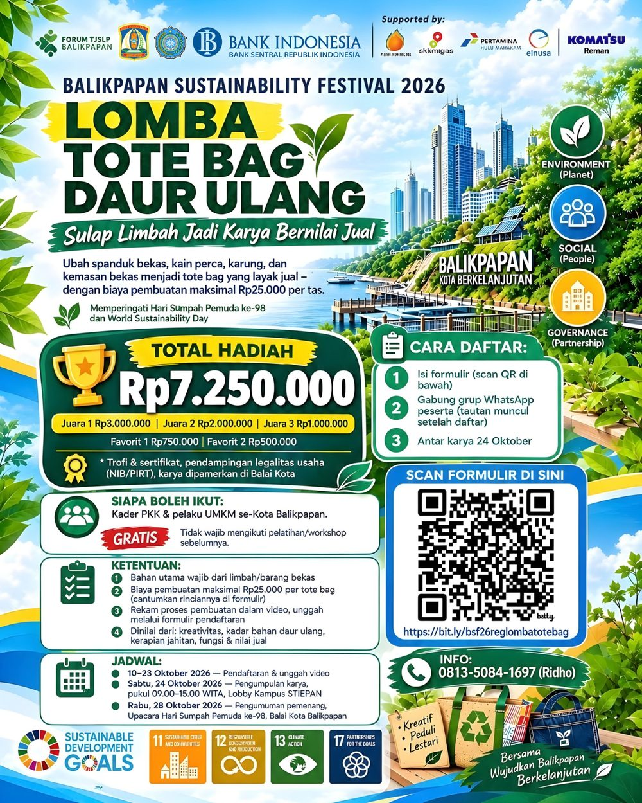
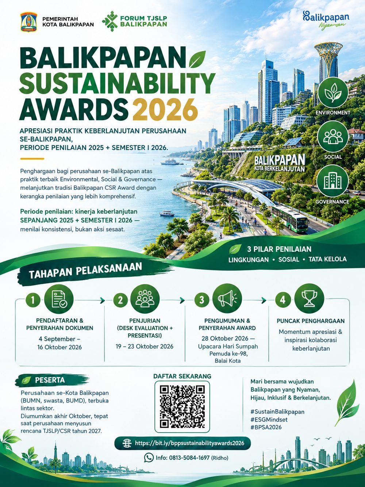

Lomba Tote Bag Daur Ulang
Format potret, cocok untuk Instagram feed, WhatsApp, dan papan pengumuman kelurahan.
Lomba Tote Bag Daur Ulang — pendaftaran dan unggah video ditutup 23 Oktober 2026. Gratis untuk kader PKK dan pelaku UMKM se-Kota Balikpapan. Lihat ketentuan · Formulir pendaftaran
Seluruh materi di halaman ini boleh disebarluaskan kembali oleh perusahaan mitra, media, dan perangkat daerah — tanpa perlu izin tertulis, cukup menyebut Forum CSR Kota Balikpapan sebagai sumber.
Klik gambar untuk membuka berkas resolusi penuh, lalu simpan.

Format potret, cocok untuk Instagram feed, WhatsApp, dan papan pengumuman kelurahan.

Untuk disebarkan ke jajaran pimpinan perusahaan dan kanal komunikasi internal perusahaan mitra.
Salin apa adanya, atau sesuaikan dengan gaya kanal masing-masing. Tautan pendaftaran sudah tercantum di dalamnya.
♻ LOMBA TOTE BAG DAUR ULANG ♻ Balikpapan Sustainability Festival 2026 Spanduk bekas, kain perca, karung, dan kemasan bekas jangan dibuang dulu! Sulap jadi tote bag layak jual dan rebut total hadiah Rp7.250.000. Juara 1 Rp3.000.000 | Juara 2 Rp2.000.000 | Juara 3 Rp1.000.000 | Favorit Rp750.000 & Rp500.000 Plus trofi, sertifikat, pendampingan legalitas usaha (NIB/PIRT), dan karya dipamerkan di Balai Kota Balikpapan. Untuk kader PKK dan pelaku UMKM se-Kota Balikpapan. GRATIS, tanpa wajib ikut pelatihan sebelumnya. Biaya pembuatan maksimal Rp25.000 per tas. Jadwal penting - 10–23 Oktober: pendaftaran - Sabtu, 24 Oktober: antar karya - Rabu, 28 Oktober: pengumuman pemenang Cara daftar 1. Isi formulir di https://bit.ly/bsf26reglombatotebag 2. Gabung grup WhatsApp peserta (tautannya muncul setelah daftar) 3. Antar karya pada 24 Oktober Info: 0813-5084-1697 (Ridho) Kreatif, peduli, lestari. Bersama wujudkan Balikpapan berkelanjutan. #BalikpapanSustainabilityFestival #ToteBagDaurUlang #BalikpapanBerkelanjutan #WorldSustainabilityDay #BalikpapanNyaman
| Dokumen | Keterangan | Akses |
|---|---|---|
| Panduan Peserta — Balikpapan Sustainability Awards 2026 | Latar belakang, dasar hukum, kategori, kriteria dan bobot penilaian, rubrik, mekanisme, serta kelengkapan dokumen. | Minta via surel |
| Template Laporan ESG — BSA 2026 | Format penyusunan laporan kinerja keberlanjutan untuk peserta award. | Minta via surel |
| Proposal Balikpapan Sustainability Festival 2026 | Konsep, lini masa, rencana anggaran biaya, dan tiga jalur kontribusi mitra. | Minta via surel |
| Perda Kota Balikpapan No. 2 Tahun 2019 | Tanggung jawab sosial dan lingkungan perusahaan di Kota Balikpapan. | JDIH BPK |